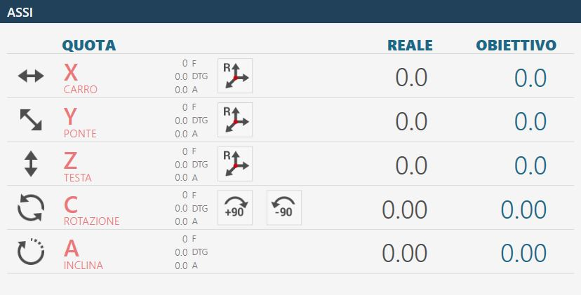
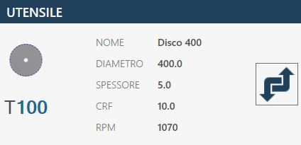
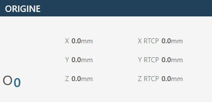
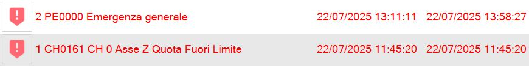

At the application start, if the axes zeroing has already been executed, the following initial screen will be visible:
Top bar
Parameters Allows to access the program parameters of Parametrix.
Parameters tool By pressing the button, you can access the page of the tool parameters. We refer to chapter 'Tool Configuration' for a detailed description of the parameters page.
Automatic rotation 0/90 degrees The 'C' axis is moved automatically to 0 or 90 degrees the instant the button is pressed.
Automatic Parking When pressed, the machine performs an automatic move of the 'X', 'Y', 'Z', 'C' axes to zero position. The movements are executed by the machine respecting the following order: (A) - Axis 'Z' in absolute zero position; (B) - Axis 'C' in position of absolute 0; (C) - Axes 'X' and 'Y' simultaneously in absolute Zero position;
WARNING!
To perform automatic parking, some safety conditions must be respected:
The position of the Axis 'A' must be to 0_.
Make sure the movement zone interested in the Location (See figure next) is free.
Zero Perform the axes zeroing (This operation is necessary when the machine is started or when the rectangular indicators are red). When the zeroing cycle is finished, the indicators will be grey. The phase of zeroing provides the sequential handling of the axes:
Axis Z
Axis A
Axis C
Simultaneously the X and Y axes
Axis B (Optional: Controlled lathe )
NOTE
The zeroing is permitted only when the encoded key is inserted in the adequate station, identifiable on the operator console.
Turning on / Turning off internal water Pressing this button, water is activated from inside the tool. The signal above the button changes color: Green = On; Red = Off.
Turning on / Turning off external water Pressing this button activates water of the main conduit. The signal above the button changes color: Green = On; Red = Off.
Change Tool Manual Pressing the button, the tool change procedure is started.
Maintenances Pressing this button a window will be visible containing all the maintenance of the machine. There will be viewed both the maintenances to do, and those within the norm.
Help Pressing this button will slightly modify the graphics of all the currently visible buttons and their behavior. It is now possible to press any button with a small question mark in the top left corner to learn the function offered by the button through a small message. To exit this assistance mode, it is simply necessary to press the 'Help' button again.
Interface elements common
The graphical interface elements in common for the functionalities are:
Axes
In this interface are reported the values of the machine axes.
Example of interface item 'Axes' with origin 0 and axes zeroing already executed:
Example of interface element 'Axes' with origin 0 and axis zeroing still to be performed:

Below is found the explanation of the elements that compose this section of the common interface, the elements are taken as reference in the case axes already zeroed.
Real quote: indicates the position of the axis with respect to the active origin. Objective quotas: indicates the quote to set to perform the movement of the axis through the pressure of the MDI or RTCP button. F: Feed, movement speed expressed in mm/minute. DTG: Distance To Go, distance from the target. A: Ampere.
Reset Axis Pressing this button sets the zero of the active origin at the point where the relative axis (X, Y or Z) is located. The operation of resetting the axis can be performed only on origins different from the 0 (zero). To use the origin in tool coordinate (TCP) it is necessary to have set the correct measures of the tool mounted before pressing the Reset Axis button.
Automatic rotation _90 degree The position of the 'C' axis is increased by 90 degrees clockwise. Example: the machine is at 12 degrees, pressing the 'Automatic rotation _90 degrees' button the machine goes to 102 degrees: 12 _ 90.
Automatic rotation -90 degree The position of axis 'C' is decremented by 90 degrees in counter-clockwise. Example: the machine is at 102 degree, pressing the 'Automatic rotation -90 degree' button the machine is moved to 12 degree: 102 - 90.
Controls
In this panel are proposed some buttons whose behavior is explained below:
Interpolation mode When the button is active (right figure) the manual movements Z, C and A are executed considering the rotation and the inclination. Z axis movement interpolated: by activating the Z axis JOG the machine will move aligned with the tool mounted.
NOTE
The tool type selected has effect on the movement direction.
Axis C movement interpolated: by running the command of axis C, in addition to the rotation, the axes X and Y will also be moved, so that the inner edge of the blade (or the tip of the tool) remains still. Axis A interpolated movement: by activating the A axes command, in addition to the inclination, the X, Y and Z axes will also be moved so that the inner edge of the blade (or the tool’s point) remains stationary in the position in which it is. Movements simultaneous of the axes Z, C and A are not allowed with the interpolated mode active.
WARNING!
Pay very attention to the state of the button because the machine's movements may be different from what is expected.
RTCP interpolation Perform a positioning set to 'Objective' quote at A quote or at C quote keeping still the inner blade wire (or the tool tip). For further specifications see the paragraph: 'Semi-Automatic RTCP Rotation Tool Center Point functionality'
MDI When pressed, the machine executes the movement until the achievement of the quotes set in the objective quotes (See above). The speed of the axes X and Y is controlled by the respective potentiometers, while the other axes are controlled by the interpolated potentiometer.
Tool
In this element of the interface are shown the main informations regarding the tool mounted on the machine.
Example of tool mounted in machine: Disk

Example of tool mounted in machine: Foretto
Tool active Clicking this button displays a confirmation popup that allows the operator to change the tool type mounted on the machine.
The choice is limited between:
Disk
Milling / Coredrill
Origin
Clicking on the 'Origin' field a small numeric keypad will be displayed on screen that will allow the operator to select a different origin to work with. The origin values can vary from 0 to 19 included.
Example with origin 0:

Example with origin 10:
RTCP - Rotation Tool Center Point
The RTCP function allows the operator to make a positioning for a miter cut maintaining the tool height unchanged, despite the inclination is varied during the positioning. The internal wire of the disk will remain in the same position in which it is at the beginning of the handling.
Operating procedure
Set the objective quota in the area dedicated to the axis 'A' (tilt) or 'C'
Pressing the RTCP button starts the tilt or rotation function keeping the lowest point of the tool fixed.
NOTE
The handling by RTCP command is allowed only when the encoded key is inserted in the adequate workstation, identifiable on the operator console.
Wait for the machine to position at the set quote.
Motor
In this section are reported some statistics regarding the motor of the machine:
Revolutions per minute (RPM) Indicates the rotations of the motor spindle per minute. If the direction of rotation is clockwise the value is positive, otherwise if the direction is anticlockwise, the sign is negative.
Intake (A) Indicate the current absorbed by the spindle motor.
Ampere threshold Indicates the threshold beyond which the alarm is activated and the spindle rotation is blocked.
Feed
The value Feed represents the interpolated move of the machine.
Right side bar
At the start of the application the preset functionality is MANUAL. This sidebar contains the following controls and programs/functions available:
Lower bar
The lower bar displays information and error messages and some buttons for certain functionalities. The following three examples of lower bar are proposed.
Without active alarms.
With a general emergency enabled, reported with an icon, an error code (in this case PE0000), the relative description and the alarms button on the right flashing.
With a message reported, in the example JOG direct active.
Alarms Allows the operator to access the alarms window.
Software minimization It allows the operator to exit the software page.
Machine shutdown Allows the operator to definitively shut down the machine.
Alarms
The alarms page indicates the active Alarms/Messages of the system. If the machine doesn’t have active alarms the page is empty, otherwise there will be a line for each error present. In the following example page relating to management and viewing of alarms, an active alarm is visible in the system.
Alarm buttons
Updates It serves to update the status of the machine alarms.
Historical alarms Allows to view the daily history of alarms.
Messages / Alarms Allows to choose if to display alarms or messages.
Alarm groups Show complete information of alarms currently present in machine.
Viewing of alarms - Standard
The standard viewing of one of the displayed alarms is composed of:
Online link A button with links for the relative online guide.
Alarm code Identification code of the problem that caused the alarm.
Description A brief description of the error encountered.
Viewing of alarms - Historical
The daily history of alarms includes, in addition to the elements already described, also the following data:
Moment of state change Date and time of alarm state change.
State alarm State reached by alarm (ON / OFF).
Viewing of alarms - Groups
The grouping system displays a single entry for each alarm, avoiding duplications.

Occurrences Number The number of occurrences of alarm activation.
Moment before activation Date and time of the first alarm activation.
Moment of last activation Date and time of the last alarm activation.